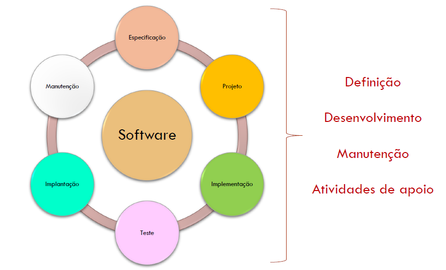
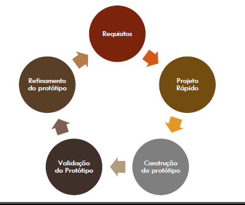
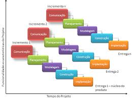
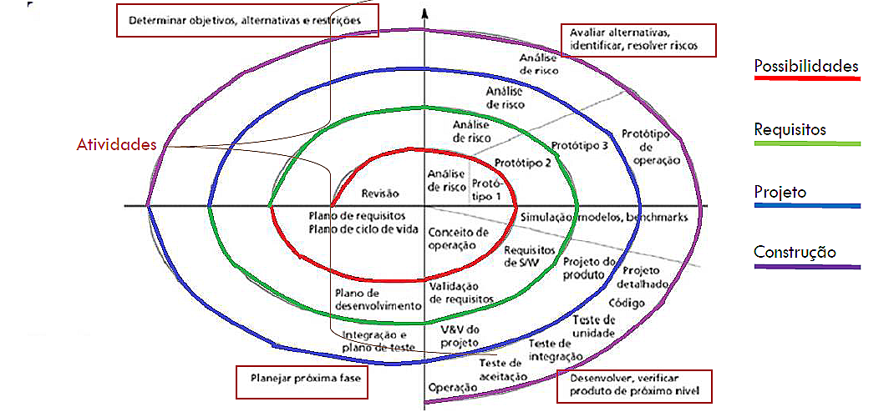
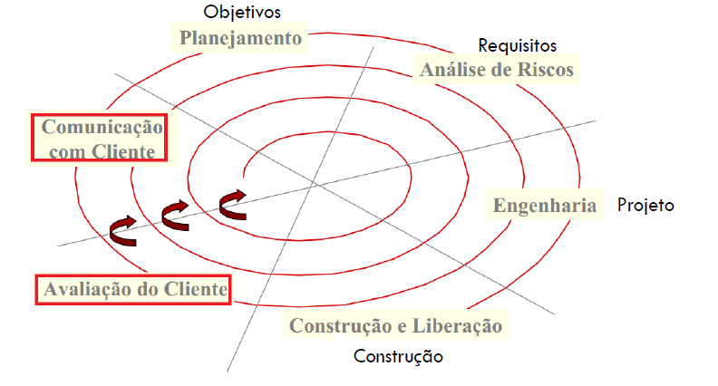
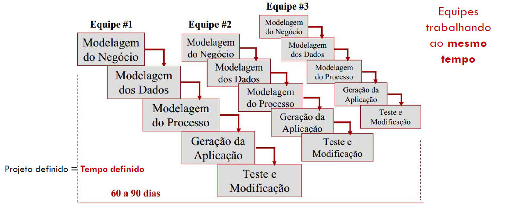
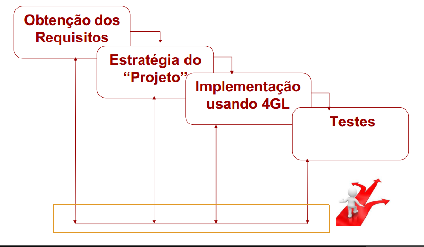

São um conjunto de atividades que levam ao desenvolvimento do produto Software. Mas, o que é definido aqui?
Um processo define:
Quem faz, o que faz e quando fazer.
Nem sempre diz como fazer
Estes processos não são padrões, cada empresa ou organização podem desenvolver seus próprios processos!!
Dentro dos Processos exitem:
Métodos: são os detalhes de como fazer para construir um software, tais como:
- Planejamento e estimativa de projeto;
- Análise de requisitos de software e de sistemas;
- Projeto da estrutura de dados;
- Algoritmo de processamento;
- Codificação;
- Teste;
- Manutenção.
Ferramentas: são o suporte automatizado aos métodos, tais como:
- Ferramentas específicas para sustentar cada um dos métodos;
- Quando as ferramentas são integradas, é estabelecido um sistema de suporte aodesenvolvimento de software: CASE -Computer AidedSoftware Engineering.
Procedimentos: são o elo entre métodos e ferramentas. Elas definem:
- Sequência em que os métodos serão aplicados;
- Produtos que devem ser entregues;
- Controles que ajudam assegurar a qualidade e coordenar as alterações;
- Marcos de referência que possibilitam administrar o progresso do software.
Eles existem para projetar, construir e manter grandes sistemas de software de maneira profissional.
Qualidade do Processo de Software
Estes processos devem conter algumas características:
Inteligibilidade: o processo é definido e inteligível;
Visibilidade: o progresso do processo é visível externamente;
Suportabilidade: o processo pode ser suportado (apoiado) por ferramentas CASE;
Aceitabilidade: o processo é aceito por todos envolvidos nele;
Confiabilidade: os erros do processo são descobertos antes que resultem em erros no produto;
Robustez: o processo pode continuar a despeito de problemas inesperados;
Manutenibilidade: o processo pode evoluir para atender alterações de necessidades organizacionais;
Velocidade: quão rápido o sistema pode ser produzido.
Modelos de Processo, o que são?
Os modelos definem as atividadespara o desenvolvimento do software, especifica os produtos de cada atividade e indica os papéis das pessoas envolvidas. As fases genéricas dos modelos consistem na seguinte imagem:

Definição
Se trata do que será desenvolvido e, nos detalhes, leva em consideração:
- Qual informação vai ser processada;
- Funções e desempenhos desejados;
- Comportamentos esperados;
- Estabelecimento de interfaces;
- Quais serão as restrições;
- Critérios de validação para definir um sistema bem sucedido;
- Quais tarefas serão realizadas;
- Engenharia de sistemas;
- Planejamento do projeto de software;
- Análise de requisitos.
Desenvolvimento
Consiste em como o software será desenvolvido. Tem os seguintes aspectos:
- Como os dados vão ser estruturados;
- Como a função vai ser implementada;
- Como os detalhes procedimentais vão ser implementados;
- Como as interfaces vão ser caracterizadas;
- Como o projeto será traduzido em uma linguagem de programação;
- Como os testes serão efetuados.
Manutenção
São as mudanças que ocorrerão depois que o software for liberado para uso operacional. Aplica novamente os os passos das fases de Definição e Desenvolvimento, porém, no contexto de um produto software existente! Consiste nas atividades de:
- Correção de falhas, erros e defeitos;
- Adaptações exigidas na medida que o ambiente do software evolui;
- Mudanças por alterações nos requisitos dos clientes.
Atividades de Apoio
Complementamas fases genéricas e são aplicadas durante toda a engenharia do software. As atividades de apoio consistem em:
- Controle e Acompanhamento do Projeto de Software
- Revisões Técnicas Formais
- Garantia de Qualidade de Software
- Gerenciamento de Configuração de Software
- Preparação e Produção de Documentos
- Gerenciamento de Reusabilidade
- Medidas
No entanto, existem vários modelos de processo que podem auxiliar em várias situações. Vejamos os principais deles
Modelo Clássico ou Cascata
Vantagens: Documentação rígida (idealmente completa) em cada atividade;
Pode ser combinado a outros modelos.
Desvantagens: Projetos reais raramente seguem um fluxo sequencial;
Em geral, é difícil para o clienteestabelecer todos os requisitos de início;
Difícil se adequar a mudançasinevitáveis de requisitos;
Uma versão executável somente ficará pronta na fase final do projeto.
Modelos Evolutivos
Levando em conta projetos que evoluem ou mudam com o tempo, temos os modelos evolutivos que tratam exatamente isso. Neles temos os seguintes aspectos:
Pode ser baseados em prototipação, ou seja, após os requisitos, uma parte do projeto é feita como protótipo para apresentar ao cliente uma determinada funcionalidade. Veja a representação abaixo:

Vantagens:
Proporcionam Iterações(versões de produto);
Verificação antecipada;
Ajuste de Requisitos.
Desvantagens:
Estimativa de Custo;
Estimativa de Prazos;
Gestão/Controle;
Visão de Curto Prazo;
Implementação pode ser comprometida: só usa o que funciona no momento.
Modelo Incremental
Neste modelo as atividades são intercaladas, possui um feedback do cliente rápido e é baseado em protipação.

Vantagens:
Permite trabalhar o entendimento dos requisitos mais perto do cliente;
Pode-se começar o sistema pelas partes melhor entendidas;
Feedback rápido ao cliente.
Desvantagens:
O processo pode não ser muito claro;
A gerência do software é complicada: O sistema não é completamente especificado inicialmente;
O produto final é frequentemente mal estruturado: A mudança contínua tende a corromper a modularidade do sistema,ou seja, compromete as partes distintas que compõe o todo do software.
Modelo Espiral
Exite o modelo espiral de 4 setores e o de 6 setores. Em suma, este modelo possui as melhores característica do Cascata e do Incremental, porém, com um adicional, a análise de riscos. Veja a representação a seguir:
Espiral 4 setores

Espiral 6 setores
Possui o adicional de 2 setores, Comunicação com Cliente e Avaliação do Cliente que servem para que o cliente tenha interação direta no projeto durante as fases.

Vantagens:
Melhores características do ciclo em Cascata e da Prototipação, adicionando um novo elemento: a Análise de Risco;
Capacita o desenvolvedor e o cliente a entender e reagir aos riscos.
Desvantagens:
Controle: Exige experiência tanto em desenvolvimento quanto sobre o negócio do cliente devido a análise dos riscos.
Modelos Baseado em Componentes
Utiliza tecnologias orientadas a objeto. Quando projetadas e implementadas apropriadamente as classes orientadas a objeto são reutilizáveis em diferentes aplicações e arquiteturas de sistema. O modelo de montagem de componentes incorpora muitas das características do modelo espiral.
Modelo Orientado a Reuso
Como o próprio nome diz, se refere a utilizar componentes reusáveis. Seus processsos se concentram em encaixar estes componentes uns com os outros. Foi baseado na analogia de componentes eletrônicos em hardwares. Podemos representar seu segmento da seguinte forma:
Alinhar componentes aos requisitos:
Dada uma especificação, encontrar componentes que a atendam;
Se possível, os requisitos são adaptados aos componentes existentes.
Integração dos Componentes:
Se necessário, projeta-se novos componentes reusáveis;
Desenvolvimento de novos componentes;
Integração de todos os componentes.
Vantagens:
Reduz a quantidade de software a ser desenvolvido (reuso);
Espera-se reduzir os custos e os riscos (Nem sempre é o que acontece);
Espera-se uma entrega do produto mais rápida ao cliente.
Desvantagens:
Pode-se desenvolver um produto que não atenda aos requisitos do cliente;
Pode ser mais difícil evoluir os sistemas: Componentes de terceiros;
A gerência de versões doscomponentes pode ser complexa
Modelo Rápido RAD(Rapid Aplication Development)
É um modelo sequencial linear que prioriza um ciclo de desenvolvimento relatimente curto. Seu desenvolvimento também é baseado em componentes/módulos, exige que os requisitos estejam bem entendidos e que o projeto esteja bem definido. Podemos representá-lo da seguinte forma:

Vantagens:
Produção rápida;
A modularizaçãoefetiva da aplicação;
Leva-se em consideração as seguintes questões:
Todas as aplicações podem ser modularizadas?
Todas as aplicações tem escopo bem definido?
Desvantagens:
Exige recursos humanos suficientes para todas as equipes;
Integração dos produtos desenvolvidos pelas equipes;
Técnicas 4GT (Quarta Geração)
Aborda o sistema com linguagens de alto nível e o código fonte é gerado automaticamente a partir destas espicificações. Estas técnicas contém: linguagens não-procedimentais, são usadas para consulta de banco de dados, a geração de código é automatizada através de ferramentas, têm capacidade gráfica de alto nível e trabalha com planilhas eletrônicas. Resume-se em:

Recomenda-se usar estas técnicas de 4GT profissionais que tenham o conhecimento dos conceitos básicos bem fundamentados e entendam bem as ferramentas que utilizam.
Modelo RUP(Rational Unified Process)
Possui o seguinte conjunto de atividades:
bem definidas;
com responsáveis por elas;
com artefatos de entrada e saída;
com dependências entre as mesmas e ordem de execução;
com modelo de ciclo de vida;
com descrição sistemática de como devem ser realizadas;